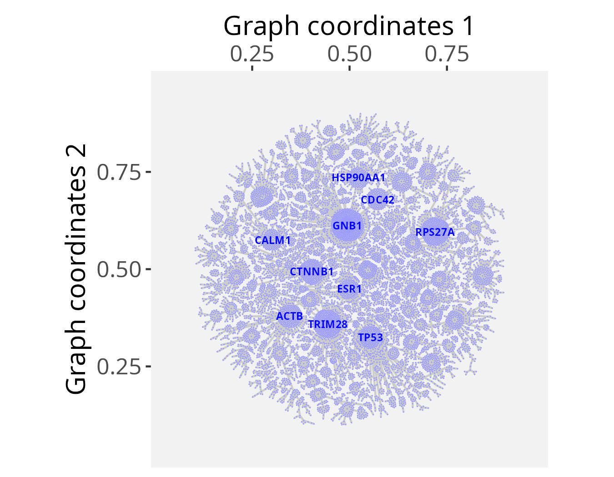
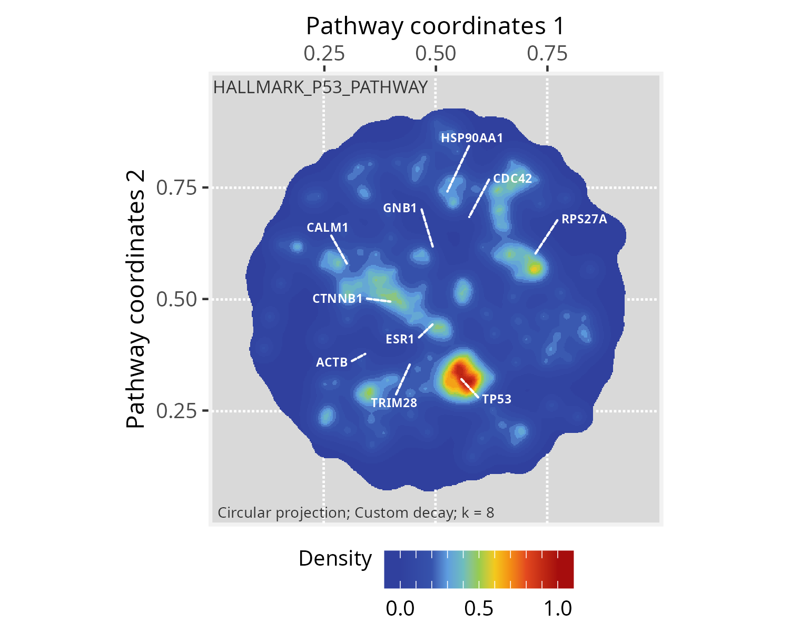
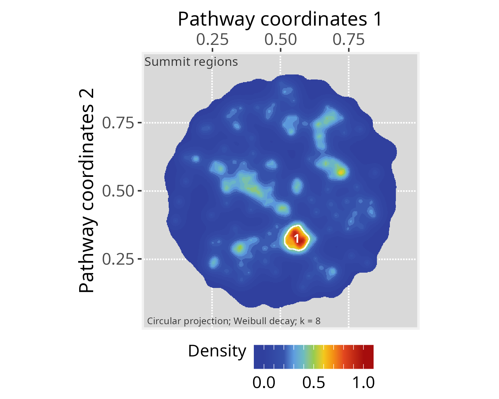

Package: PathwaySpace 1.1.1
This tutorial creates a large PathwaySpace object with
n = 12990 vertices, upon which we will project binary
signals representing feature sets from a relatively small number of
vertices. The goal is to enhance clarity and make it less likely for
viewers to miss important details of large graphs when only a limited
number of features carry relevant information. The projections will
emphasize clusters of vertices forming summits, and we will add
silhouettes as decorative elements to outline the overall graph
structure. The examples in this section are adapted from Ellrott et al. (2025) and Tercan et al. (2025).
We will start by loading an igraph object containing gene interaction data available from the Pathway Commons database (version 12) (Rodchenkov et al. 2019).
# Check required packages for this vignette
if (!require("remotes", quietly = TRUE)){
install.packages("remotes")
}
if (!require("RGraphSpace", quietly = TRUE)){
remotes::install_github("sysbiolab/RGraphSpace")
}
if (!require("PathwaySpace", quietly = TRUE)){
remotes::install_github("sysbiolab/PathwaySpace")
}# Check versions
if (packageVersion("RGraphSpace") < "1.1.1"){
message("Need to update 'RGraphSpace' for this vignette")
remotes::install_github("sysbiolab/RGraphSpace")
}
if (packageVersion("PathwaySpace") < "1.1.1"){
message("Need to update 'PathwaySpace' for this vignette")
remotes::install_github("sysbiolab/PathwaySpace")
}# Load packages
library(PathwaySpace)
library(RGraphSpace)
library(igraph)
library(ggplot2)# Load a large igraph object
data("PCv12_pruned_igraph", package = "PathwaySpace")
# Check number of vertices
length(PCv12_pruned_igraph)
# [1] 12990
# Check vertex names
head(V(PCv12_pruned_igraph)$name)
# [1] "A1BG" "AKT1" "CRISP3" "GRB2" "PIK3CA" "PIK3R1"
# Get top-connected nodes for visualization
top10hubs <- igraph::degree(PCv12_pruned_igraph)
top10hubs <- names(sort(top10hubs, decreasing = TRUE)[1:10])
head(top10hubs)
# [1] "GNB1" "TRIM28" "RPS27A" "CTNNB1" "TP53" "ACTB"## Check graph validity
g_space_PCv12 <- GraphSpace(PCv12_pruned_igraph, mar = 0.1)## Visualize the graph layout labeled with 'top10hubs' nodes
plotGraphSpace(g_space_PCv12, node.labels = top10hubs, label.color = "blue", theme = "th3")
We now load gene sets from the MSigDB collection (Liberzon et al. 2015), which are subsequently used to project a binary signal onto the PathwaySpace image.
# Load a list with Hallmark gene sets
data("Hallmarks_v2023_1_Hs_symbols", package = "PathwaySpace")
# There are 50 gene sets in "hallmarks"
length(hallmarks)
# [1] 50
# We will use the 'HALLMARK_P53_PATHWAY' (n=200 genes) for demonstration
length(hallmarks$HALLMARK_P53_PATHWAY)
# [1] 200We now follow the PathwaySpace pipeline as explained in the
introductory vignette, that is,
using the buildPathwaySpace() constructor to initialize a
new PathwaySpace object with the Pathway Commons
interactions.
# Run the PathwaySpace constructor
p_space_PCv12 <- buildPathwaySpace(gs=g_space_PCv12, nrc=500)
# Note: 'nrc' sets the number of rows and columns of the
# image space, which will affect the image resolution (in pixels)…and mark the HALLMARK_P53_PATHWAY genes in the PathwaySpace object.
# Intersect Hallmark genes with the PathwaySpace
hallmarks <- lapply(hallmarks, intersect, y = names(p_space_PCv12) )
# After intersection, the 'HALLMARK_P53_PATHWAY' dropped to n=173 genes
length(hallmarks$HALLMARK_P53_PATHWAY)
# [1] 173
# Set a binary signal (1s) to 'HALLMARK_P53_PATHWAY' genes
vertexSignal(p_space_PCv12) <- 0
vertexSignal(p_space_PCv12)[ hallmarks$HALLMARK_P53_PATHWAY ] <- 1…and run the circularProjection() function.
# Run signal projection
p_space_PCv12 <- circularProjection(p_space_PCv12)Next, we decorate the PathwaySpace image with graph silhouettes and plot the results.
# Add silhouettes
p_space_PCv12 <- silhouetteMapping(p_space_PCv12)
# Plot the results
plotPathwaySpace(p_space_PCv12, title="HALLMARK_P53_PATHWAY", marks = top10hubs, mark.size = 2, theme = "th3")
The summits represent regions within the graph that exhibit signal
values that are notably higher than the baseline level. These regions
may be of interest for downstream analyses. One potential downstream
analysis is to determine which vertices projected the original input
signal. This could provide insights into communities within these summit
regions. One may also wish to explore other vertices within the summits,
by querying associations with the original input gene set. In order to
extract vertices within summits, next we use the
summitMapping() function, which also decorates summits with
contour lines.
# Mapping summits
p_space_PCv12 <- summitMapping(p_space_PCv12, minsize = 50)
plotPathwaySpace(p_space_PCv12, title="Summit regions", theme = "th3")
# Extracting summits from a PathwaySpace
summits <- getPathwaySpace(p_space_PCv12, "summits")
class(summits)
# [1] "list"If you use PathwaySpace, please cite:
Tercan & Apolonio et al. Protocol for assessing distances in pathway space for classifier feature sets from machine learning methods. STAR Protocols 6(2):103681, 2025. https://doi.org/10.1016/j.xpro.2025.103681
Ellrott et al. Classification of non-TCGA cancer samples to TCGA molecular subtypes using compact feature sets. Cancer Cell 43(2):195-212.e11, 2025. https://doi.org/10.1016/j.ccell.2024.12.002
## R version 4.5.2 (2025-10-31)
## Platform: x86_64-pc-linux-gnu
## Running under: Ubuntu 24.04.4 LTS
##
## Matrix products: default
## BLAS: /usr/lib/x86_64-linux-gnu/openblas-pthread/libblas.so.3
## LAPACK: /usr/lib/x86_64-linux-gnu/openblas-pthread/libopenblasp-r0.3.26.so; LAPACK version 3.12.0
##
## locale:
## [1] LC_CTYPE=en_US.UTF-8 LC_NUMERIC=C
## [3] LC_TIME=en_US.UTF-8 LC_COLLATE=en_US.UTF-8
## [5] LC_MONETARY=en_US.UTF-8 LC_MESSAGES=en_US.UTF-8
## [7] LC_PAPER=en_US.UTF-8 LC_NAME=C
## [9] LC_ADDRESS=C LC_TELEPHONE=C
## [11] LC_MEASUREMENT=en_US.UTF-8 LC_IDENTIFICATION=C
##
## time zone: America/Sao_Paulo
## tzcode source: system (glibc)
##
## attached base packages:
## [1] stats graphics grDevices utils datasets methods base
##
## other attached packages:
## [1] patchwork_1.3.2 igraph_2.2.0 SpotSpace_0.0.5 PathwaySpace_1.1.1
## [5] RGraphSpace_1.1.1 ggplot2_4.0.0.9000 remotes_2.5.0 bs4cards_0.1.1
##
## loaded via a namespace (and not attached):
## [1] RColorBrewer_1.1-3 rstudioapi_0.17.1 jsonlite_2.0.0
## [4] shape_1.4.6.1 magrittr_2.0.4 spatstat.utils_3.2-0
## [7] ggbeeswarm_0.7.2 farver_2.1.2 rmarkdown_2.30
## [10] GlobalOptions_0.1.2 fs_1.6.6 vctrs_0.6.5
## [13] ROCR_1.0-11 spatstat.explore_3.5-3 htmltools_0.5.8.1
## [16] sass_0.4.10 sctransform_0.4.2 parallelly_1.45.1
## [19] KernSmooth_2.23-26 bslib_0.9.0 htmlwidgets_1.6.4
## [22] ica_1.0-3 fontawesome_0.5.3 plyr_1.8.9
## [25] plotly_4.11.0 zoo_1.8-14 cachem_1.1.0
## [28] mime_0.13 lifecycle_1.0.4 pkgconfig_2.0.3
## [31] Matrix_1.7-4 R6_2.6.1 fastmap_1.2.0
## [34] fitdistrplus_1.2-4 future_1.67.0 shiny_1.11.1
## [37] digest_0.6.37 colorspace_2.1-1 Seurat_5.4.0.9009
## [40] tensor_1.5.1 RSpectra_0.16-2 irlba_2.3.5.1
## [43] progressr_0.17.0 spatstat.sparse_3.1-0 httr_1.4.7
## [46] polyclip_1.10-7 abind_1.4-8 compiler_4.5.2
## [49] withr_3.0.2 S7_0.2.0 fastDummies_1.7.5
## [52] MASS_7.3-65 tools_4.5.2 vipor_0.4.7
## [55] lmtest_0.9-40 beeswarm_0.4.0 httpuv_1.6.16
## [58] future.apply_1.20.0 goftest_1.2-3 glue_1.8.0
## [61] nlme_3.1-168 promises_1.3.3 grid_4.5.2
## [64] Rtsne_0.17 cluster_2.1.8.2 reshape2_1.4.4
## [67] generics_0.1.4 gtable_0.3.6 spatstat.data_3.1-8
## [70] tidyr_1.3.1 data.table_1.17.8 sp_2.2-0
## [73] spatstat.geom_3.6-0 RcppAnnoy_0.0.22 ggrepel_0.9.6
## [76] RANN_2.6.2 pillar_1.11.1 stringr_1.5.2
## [79] spam_2.11-1 RcppHNSW_0.6.0 later_1.4.4
## [82] circlize_0.4.16 splines_4.5.2 dplyr_1.1.4
## [85] lattice_0.22-9 survival_3.8-6 deldir_2.0-4
## [88] tidyselect_1.2.1 miniUI_0.1.2 pbapply_1.7-4
## [91] knitr_1.50 gridExtra_2.3 scattermore_1.2
## [94] xfun_0.54 matrixStats_1.5.0 stringi_1.8.7
## [97] lazyeval_0.2.2 yaml_2.3.10 evaluate_1.0.5
## [100] codetools_0.2-20 tibble_3.3.0 cli_3.6.5
## [103] uwot_0.2.3 xtable_1.8-4 reticulate_1.44.1
## [106] jquerylib_0.1.4 dichromat_2.0-0.1 Rcpp_1.1.0
## [109] globals_0.18.0 spatstat.random_3.4-2 png_0.1-8
## [112] ggrastr_1.0.2 spatstat.univar_3.1-4 parallel_4.5.2
## [115] dotCall64_1.2 listenv_0.9.1 viridisLite_0.4.2
## [118] scales_1.4.0 ggridges_0.5.7 SeuratObject_5.3.0
## [121] purrr_1.1.0 rlang_1.1.6 cowplot_1.2.0